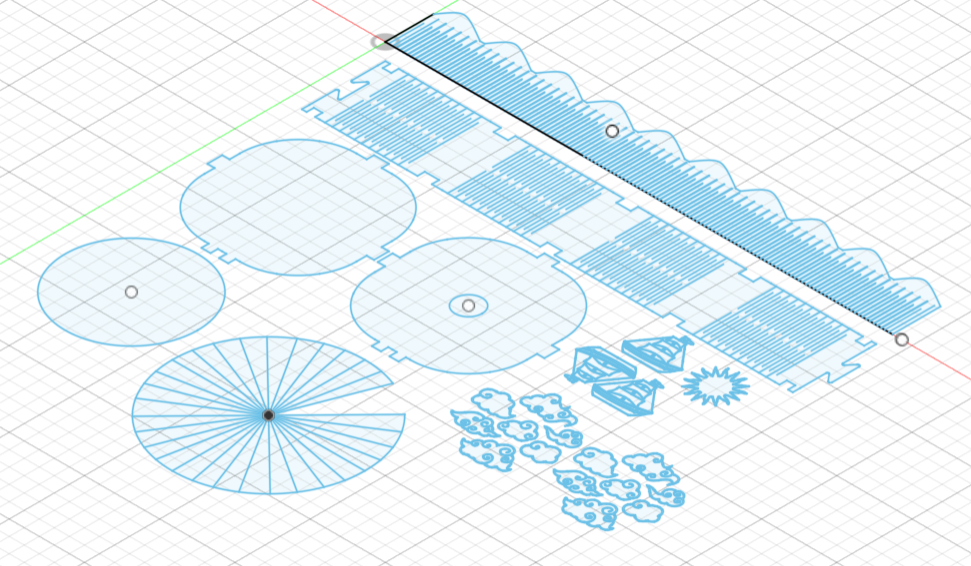
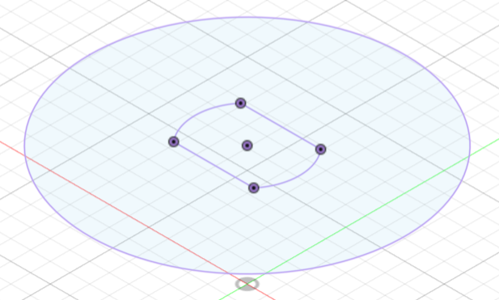
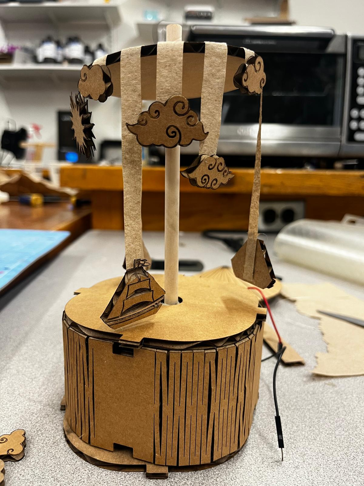
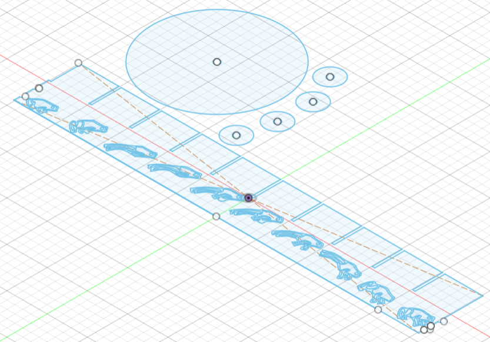

# kinetic sculpture
# ---------------------------------
the kinetic sculpture was a lot of fun but also a lot of trial and error. at first, i wanted to make a carousel-like sculpture. the fusion sketch i made is below.

i also use calipers to measure the coupler on the motor to make some fixtures to fix my dowell to, which would be the central part of the sculpture.

after lasercutting and assembling the scultpture - this is roughly where i got to, and it was looking good.

however, i was having issues with the motor speed - the lowest speed was still too fast, and the sculpture was moving too fast for the pieces to be visible. after much trial and error, i gave up on this attempt. after some browsing online, i found out about zoetropes, and so i decided to make a zoetrope instead!

i found an animation strip online and imported it as an svg. i realized that i could not score the strip that the animation was on, because the animation would have to be on one side and the scores on the other side. so, i decided to score the outside by hand using an exacto knife.

it was a lot of trial and error to figure out what slit size worked best, and what motor speed worked best. the animation was also not too visible because it was just scored by the lasercutter, so i went over it with a black marker. eventually, i found a good slit size and motor speed - here's what the animation looks like:

there was still a lot of lopsidedness going on, and i was ready to throw in the towel because it was almost 2am. however, my friend who is studying engineering who was with me suggested that i add some extra layers of cardboard along the dowell where it portrudes out of the box, and where it hold the zoetrope - this did wonders to my sculpture and also in affirming my friend that they would make a good engineer.

here is the code that i used for the motor:
const int A1A = 12; // define pin 12 for A-1A (PWM Speed)
const int A1B = 14; // define pin 14 for A-1B (direction)
// setting PWM properties
const int freq = 5000;
const int resolution = 8;
void setup() {
pinMode(A1A, OUTPUT); // specify these pins as outputs
pinMode(A1B, OUTPUT);
ledcAttach(A1A, freq, resolution);
ledcWrite(A1A, 0); // start with the motors off
digitalWrite(A1B, LOW);
}
void loop() {
// start the motor at a low speed
ledcWrite(A1A, 200);
digitalWrite(A1B, LOW);
delay(5000);
}